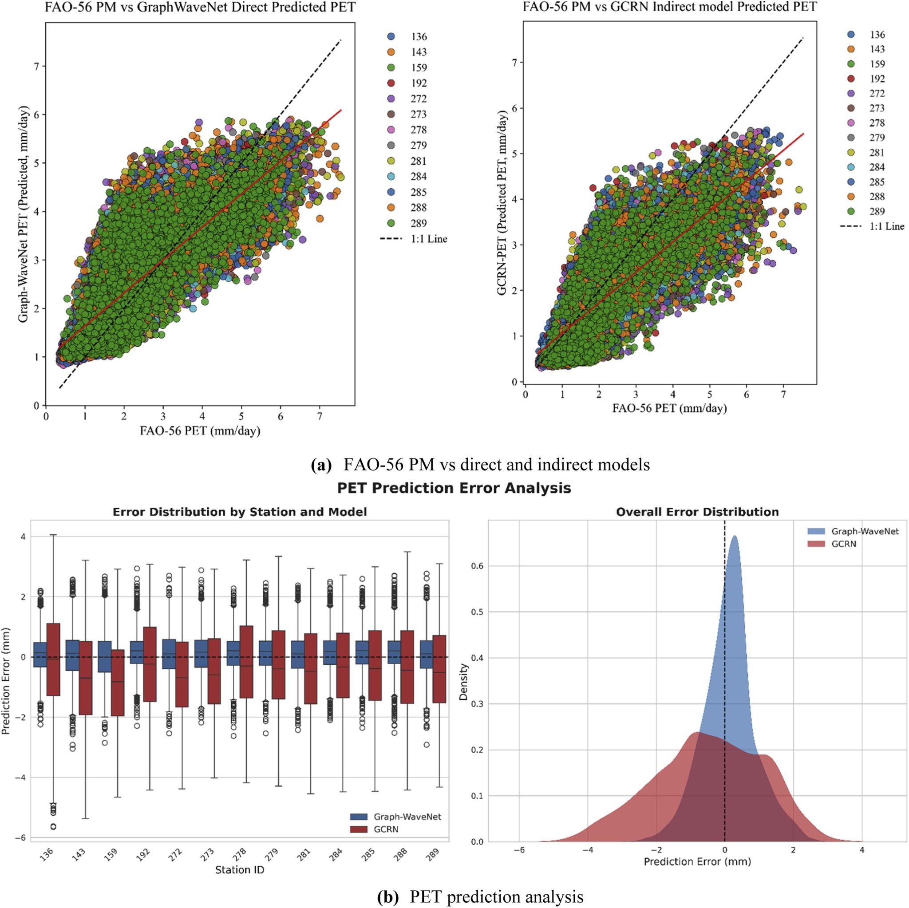
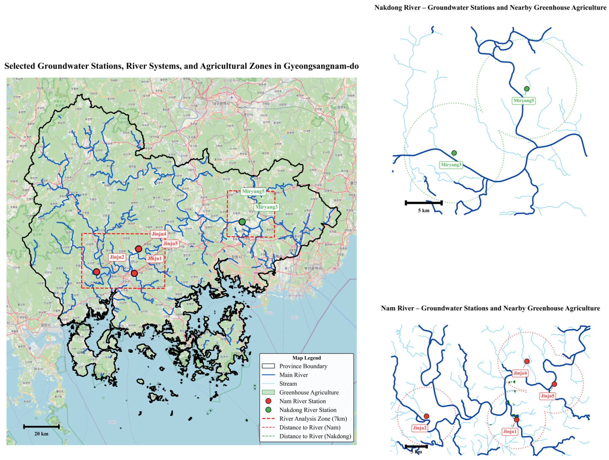

Regional Water Environment System Lab
Water is the foundation of sustainable agriculture and resilient communities. At RWESL, we advance science-driven solutions for water resource conservation, hydrological watershed modeling, and autonomous AI-powered environmental monitoring.
Autonomous Drone Surveillance & Field Hydrology
Real-time aerial observation of agricultural watershed dynamics, river-corridor runoff, and high-intensity greenhouse farming zones across Gyeongsangnam-do.
Core Research Pillars
By integrating artificial intelligence, big data analytics, remote sensing, and advanced hydrological modeling, we transform environmental data into actionable insights.
Hydrological & Watershed Modeling
Comprehensive watershed modeling using SWAT, HSPF, and distributed physical models. Addressing flood risks, drought mitigation, and reservoir operation dynamics in the Nakdong River and Namgang Dam basins.
AI & Environmental Data Science
Developing autonomous monitoring agents, machine learning potential evapotranspiration (PET) forecasting, and deep learning groundwater trend prediction models for high-density agricultural regions.
Agricultural Water Quality & Climate
Monitoring agricultural non-point source pollution, harmful cyanobacterial algal blooms, and water curtain greenhouse sustainability under intensifying global climate change scenarios.
Latest Scientific Publication Graphics (2026)
Authentic high-resolution computational models, deep neural error diagnostics, and geospatial groundwater analyses published in top peer-reviewed SCI/SCIE journals by RWESL researchers. Click any figure to examine in full 2048px resolution.

Deep Learning-Based Direct and Indirect Potential Evapotranspiration Prediction: A Case of the Nakdong River Basin
Direct scientific output evaluating Graph-WaveNet vs. GCRN spatio-temporal graph neural networks against classical FAO-56 PM baselines across 13 meteorological stations in the Nakdong River Basin, South Korea, showing superior error distributions and density clustering.

Seasonal Groundwater Trends and Predictions in Greenhouse Agriculture of Gyeongsangnam-Do Using Deep Learning
Direct scientific GIS mapping delineating groundwater telemetry stations, river systems (Nam & Nakdong Rivers), and intensive water-curtain greenhouse agriculture zones in Jinju and Miryang, evaluating seasonal agricultural aquifer drawdown.
Research Leadership
Directing forward-looking scientific research in hydrological modeling, watershed water quality, and agricultural resilience at Gyeongsang National University.

Prof. Sang Min Kim
Prof. Sang Min Kim is the Director of the Regional Water Environment System Laboratory (RWESL). With extensive national and international leadership in hydrological modeling, watershed water quality management, non-point source pollution mitigation, and climate adaptation, he spearheads major research initiatives bridging environmental hydrology with smart agricultural systems across South Korea.
Laboratory & Watershed Field Base
Combining state-of-the-art computational modeling labs at Gyeongsang National University with real-world field telemetry stations and watershed monitoring networks across South Korea.